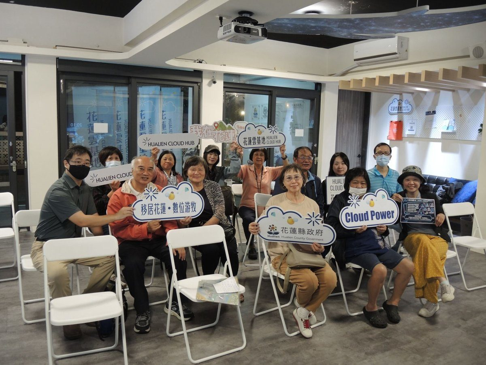

花蓮縣府駁善款濫用傳言 籲選舉勿抹黑基層
花蓮縣政府澄清救災善款遭濫用傳聞，強調0206、0403地震到0923堰塞湖災害的會議記錄與收支皆公開上網，呼籲各界勿為選舉抹黑基層與所有為花蓮努力的人。…
閱讀全文 →花蓮縣政府澄清救災善款遭濫用傳聞，強調0206、0403地震到0923堰塞湖災害的會議記錄與收支皆公開上網，呼籲各界勿為選舉抹黑基層與所有為花蓮努力的人。…
閱讀全文 →
花蓮縣政府地政處處長黃一釗受邀到花蓮市農會「生活法律－有趣不動產」講習授課，以案例說明土地繼承、產權保障與交易安全，讓地政知識走入社區。…
閱讀全文 →
花蓮縣政府「三三小聚 水水花蓮」11月場次以數位反詐騙為主題，邀請宜蘭地檢署宣講師袁蕾以情境演練教民眾辨識假投資、假交友等話術，並提醒撥165查證。…
閱讀全文 →
花蓮縣政府以《2025花蓮VLR》榮獲2026第十九屆台灣企業永續獎「政府機關自願檢視報告—金級獎」，報告以韌性、共好、未來為主軸，記錄0403強震後花蓮韌性重生的治理經驗。…
閱讀全文 →
吉安鄉接連發生兩起民宅火警，仁和村民宅與仁安村貨櫃鐵皮屋分別在23日、24日受損，所幸無人傷亡。鄉長游淑貞第一時間啟動關懷機制，會同代表會主席邱美雲與在地村長到宅慰問、致贈關懷金，也提醒鄉親定期檢查電器與電線、落實居家防…
閱讀全文 →77歲范女士九月連續頭痛頭暈仍照常下田，跌落水溝後查出出血性腦中風，經花蓮慈院以NaoTrac機器手臂導航輔助微創手術清除腦內血塊，術後已能站立行走，是院方添購設備後首位受益病人。…
閱讀全文 →吉安鄉公所攜手社團法人台灣寵物保姆協會推動115年度動物保護觀念扎根計畫，26日在吉安鄉立幼兒園演出動物人偶劇場，以音樂、舞蹈、趣味問答與互動教育帶幼童認識飼主責任與尊重生命。巡演自10月初起近兩個月共八場次，遍及國小、…
閱讀全文 →
花蓮市建興街與建國路二段交會處路口寬不到四公尺，車輛會車困難，地方憂心消防車、救護車進出受阻。市長魏嘉彥今（26）日偕同建設課長徐國城到場會勘，市公所規劃在農曆年後將瓶頸路段拓寬八公尺，並新設排水溝、鋪設瀝青混凝土路面及…
閱讀全文 →花蓮慈濟醫院創新研發中心副技術長劉靜安博士投入丹參原生質體幹細胞研究多年，證實幹細胞活性成分產量高於萃取物10到12倍，植物外泌體能喚醒抗衰老基因，12月4日將在台灣醫療科技展發表最新神經救援成果。…
閱讀全文 →
因應九合一選舉選前之夜交通管制，花蓮市公所宣布11月27日（週五）暫停垃圾、資源回收及廚餘收運一天，請市民提早打包暫存垃圾。…
閱讀全文 →第 48 期・11/27 – 12/03 本週運勢精華指南。🌌 本週星象提示：本週迎來 12/01（二）水星合相木星的幸運相位，並逐漸邁向 12/05 射手座新月。上週雙子滿月結算的對話與合約，本週將轉化為長遠發展的基石…
閱讀全文 →花蓮慈濟醫院獲2026第三屆「台灣永續典範醫院獎」與「永續報告書金級」雙獎，從災區18天醫療站、5G遠距醫療與無人機送藥，到節能減碳與人才永續，展現東部醫療韌性。…
閱讀全文 →
吉安鄉立幼兒園師生87人走進花蓮防災教育館，透過互動體驗學習居家防災、天然災害與緊急救護。館長李漢龍期盼孩子不害怕也懂自救，鄉長游淑貞強調防災教育從小扎根。…
閱讀全文 →
日前有一名婦人獨自站在花蓮縣秀林鄉富世村的路旁徘徊，口中不斷說著要徒步返回玉里住家，腳步卻一路往太魯閣方向前進，方向完全相反。路過民眾察覺她疑似失智迷途，擔心再走下去恐怕發生危險，趕緊向警方報案求援。新城警分局富世派出所…
閱讀全文 →兒童文學作家林少雯再捐《弟子規新說》、《大地請你別哭泣》及《紅赤土之戀》三本著作，嘉惠花蓮全縣125所學校，主題涵蓋品格教育、環境保護與土地關懷，從經典文化一路延伸到自然生態，為校園閱讀資源再添柴火，也讓書香持續陪伴花蓮…
閱讀全文 →
花蓮縣政府將在花蓮市自由街近民國路端增設迴轉道，並同步加設行人號誌，讓往明義街方向的車輛提前完成迴轉、不必擠進路口等待，減少車流與行人動線交織；工程同時塗銷8格停車格，原智慧停車柱遷往中山路自由廣場前，預計12月初施工，…
閱讀全文 →全球高齡化下阿茲海默症治療長期受限於血腦障壁，花蓮慈濟醫院創新研發中心吳李偉副研究員團隊以TZX4複合物導入幹細胞多機轉調控策略，成功開發幹細胞優化添加劑，獲第22屆國家新創獎肯定，12月4日將於台灣醫療科技展展位NO.…
閱讀全文 →
吉安鄉環境綠美化苗木申請開跑，即日起至116年1月31日受理，縣民每人20株、機關學校及社團每案100株為限。鄉長游淑貞邀請鄉親攜手植樹，打造永續宜居家園。…
閱讀全文 →
微型電動二輪車毒駕今年1至9月580件、暴增717%，交通部11月底提修法，毒駕與拒測比照汽機車，增訂沒入車輛、扣繳牌照；拒測初犯最高27萬元。…
閱讀全文 →可樂電子報小編…
閱讀全文 →